| 1. | 2. 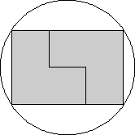 | 3. 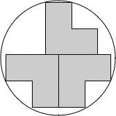 | ||
| r = √2 = 1.414+ Trivial. | r = √13/2 = 1.802+ Found by David W. Cantrell in June 2005. | r = √305/8 = 2.183+ Found by Maurizio Morandi in August 2007. |
| 4. 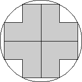 | 5. 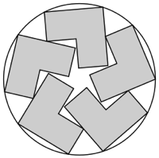 | 6. 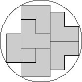 | ||
| r = √5 = 2.236+ Found by Erich Friedman in June 2005. | r = 2.569+ Found by Maxim Razin and Nick Baxter in November 2019. | r = √8249/32 = 2.838+ Found by Erich Friedman in June 2005. |
| 7. 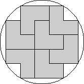 | 8. 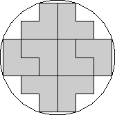 | 9. 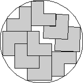 | ||
| r = √34/2 = 2.915+ Found by Erich Friedman in June 2005. | r = √10 = 3.162+ Found by Erich Friedman in June 2005. | r = 3.373+ Found by David W. Cantrell in August 2007. |
| 10. 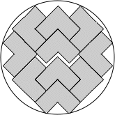 | 11. 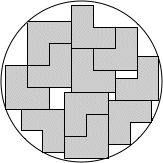 | 12. 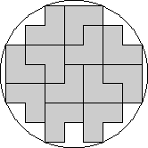 | ||
| r = 3.516+ Found by Maurizio Morandi in August 2007. | r = 3.705+ Found by Maurizio Morandi in September 2008. | r = √58/2 = 3.807+ Found by Erich Friedman in June 2005. |
| 13. 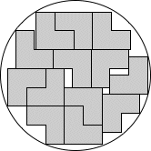 | 14. 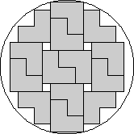 | 15. 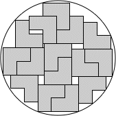 | ||
| r = 3.958+ Found by Maurizio Morandi in September 2008. | r = √17 = 4.123+ Found by David W. Cantrell in August 2007. | r = 4.214+ Found by Maurizio Morandi in August 2007. |
| 16. 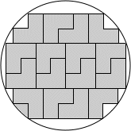 | 17. 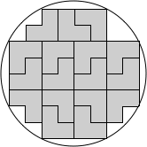 | 18. 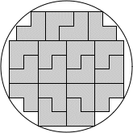 | ||
| r = √74/2 = 4.301+ Found by Maurizio Morandi in September 2008. | r = 2√5 = 4.472+ Found by Maurizio Morandi in September 2008. | r = √86609/64 = 4.598+ Found by Maurizio Morandi in September 2008. |